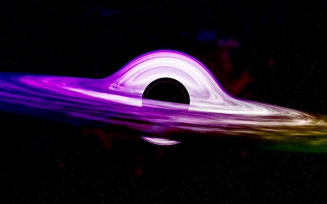
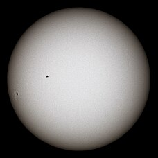
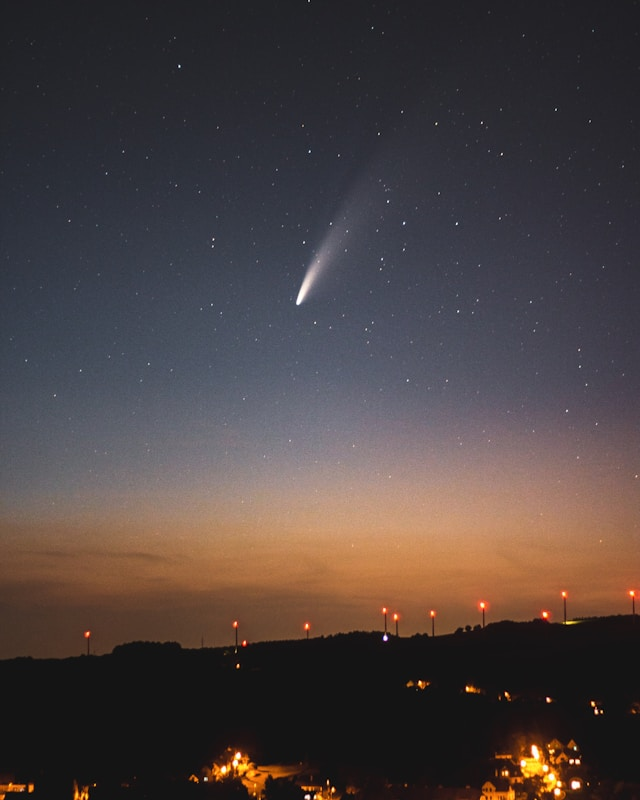

BLACK HOLES, WHAT ARE THEY ?
A black hole is a region of spacetime where gravity is so intense that nothing, not even light, can escape. According to Einstein's theory of general relativity, a sufficiently compact mass can create a black hole by distorting spacetime. The boundary marking the point of no return is called the event horizon. Despite their immense influence on nearby objects, black holes lack any discernible features according to general relativity and resemble ideal black bodies that emit no light.
See more in WikipediaSTARS, WHAT ARE THEY ?
A star, a luminous plasma sphere, is held by self-gravity. The closest star, our Sun, shines upon Earth. Other stars, seen as fixed lights due to vast distances, populate the night sky. Prominent ones form constellations; some bear proper names. Astronomers catalog them, identifying and standardizing stellar designations. An estimated 10^22 to 10^24 stars fill the observable universe, with about 4,000 visible to the naked eye within the Milky Way.
See more in WikipediaCOMMETS, WHAT ARE THEY ?
A comet is a small icy body in the Solar System that releases gases when it approaches the Sun, a process known as outgassing. This creates a coma, an extended atmosphere, and sometimes a tail of gas and dust blown out from the coma. These effects are caused by solar radiation and the solar wind plasma interacting with the comet's nucleus
See more in WikipediaANIMES, WHAT ARE THEY ?
Anime is hand-drawn and computer-generated animation originating from Japan. Outside Japan and in English, anime refers specifically to animation produced in Japan.However, in Japan and Japanese, anime (a term derived from a shortening of the English word animation) describes all animated works, regardless of style or origin. Many works of animation with a similar style to Japanese animation are also produced outside Japan. Video games sometimes also feature themes and art styles that can be considered as "anime".
See more in WikipediaMANGAS, WHAT ARE THEY ?
Manga are comics or graphic novels originating from Japan. Most manga conform to a style developed in Japan in the late 19th century, and the form has a long history in earlier Japanese art.The term manga is used in Japan to refer to both comics and cartooning. Outside of Japan, the word is typically used to refer to comics originally published in the country.
See more in Wikipedia